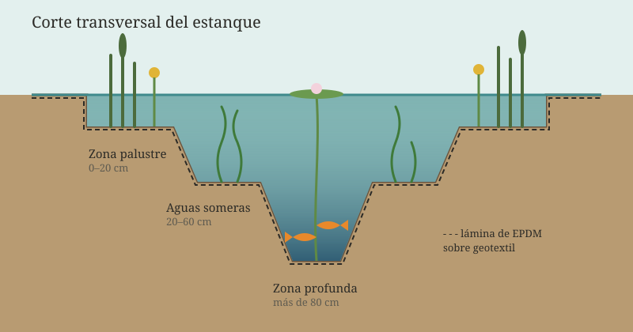
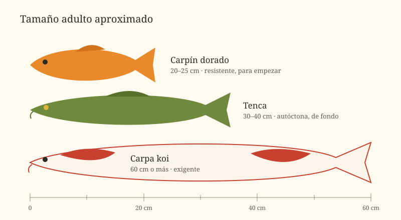
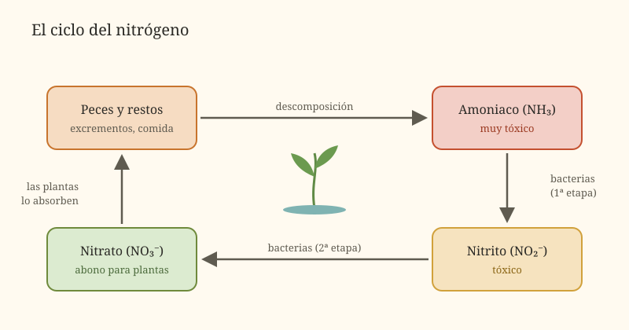

Entrada 01
Diseñar el estanque
Profundidades, zonas de plantas y cómo calcular cuántos litros tienes.
Cuaderno de campo
Criar peces en un estanque natural, sin bombas ni magia: plantas, paciencia y observación.
Hace tres primaveras cavé un hoyo en el fondo del huerto. Hoy es un estanque con nenúfares, ranas y una docena de peces que nunca han visto un filtro eléctrico. Este cuaderno recoge lo que he aprendido (y lo que he hecho mal) por el camino.
Un estanque natural se mantiene limpio gracias a sus plantas y a las bacterias que viven en el fondo, no a una depuradora. Funciona si respetamos su equilibrio: pocas especies, pocos peces y mucha vegetación.

Entrada 01
Profundidades, zonas de plantas y cómo calcular cuántos litros tienes.

Entrada 02
Carpines, tencas y koi: qué necesita cada uno y cuántos caben.

Entrada 03
El ciclo del nitrógeno y cuánto dar de comer según la temperatura.
Entrada 01 · Primavera
El error más común al construir un estanque es hacerlo como una piscina: paredes rectas y la misma profundidad en todas partes. Un estanque natural necesita escalones, porque cada profundidad alberga plantas distintas y cada planta cumple una función.
Antes de comprar un solo pez hay que conocer el volumen. Una aproximación sencilla es multiplicar el largo por el ancho y por la profundidad media (no la máxima). Como un estanque natural no es una caja, aplico un factor de corrección de 0,7 para compensar los taludes.
Usé lámina de EPDM, que aguanta bien el sol, pero no puse geotextil debajo y una raíz la perforó al segundo año. Pon siempre una capa protectora (o una alfombra vieja) entre la tierra y la lámina.
Entrada 02 · Verano
La tentación es llenar el estanque de colores. Pero cada pez produce desechos, y en un estanque sin filtro son las plantas y las bacterias las que tienen que procesarlos. Mi consejo: empieza con pocos peces y espera un año. Se reproducirán solos.
El más agradecido. Resiste el frío, tolera agua poco perfecta y crece hasta unos 20–25 cm. Ideal para estanques pequeños y para empezar.
Pez autóctono, discreto y de fondo. Remueve el lodo buscando larvas y apenas se ve, pero ayuda a mantener el equilibrio. Convive bien con los carpines.
Preciosa, pero exigente: supera fácilmente los 60 cm y arranca las plantas. Sinceramente, no la recomiendo para un estanque natural salvo que tenga varios miles de litros.
Entrada 03 · Otoño e invierno
El agua "limpia" no es la que se ve transparente, sino la que tiene poco amoniaco. Los peces lo excretan continuamente y es tóxico incluso en pequeñas cantidades. Lo que lo elimina es un proceso invisible: el ciclo del nitrógeno.
Unas bacterias convierten el amoniaco en nitrito (también tóxico) y otras convierten el nitrito en nitrato, que es mucho menos dañino y sirve de abono a las plantas. Por eso un estanque recién llenado necesita varias semanas antes de recibir peces: las bacterias tienen que colonizarlo primero.
Los peces son de sangre fría: su metabolismo depende del agua. Con frío digieren muy despacio y la comida sin digerir se pudre en su intestino y en el fondo. Tengo un termómetro flotante y esta tabla pegada en la caseta:
No rompas el hielo a golpes: las ondas de choque estresan a los peces. Si el estanque se congela, apoya un cazo de agua caliente para abrir un agujero y que salgan los gases. Con más de 80 cm de profundidad, el fondo se mantiene alrededor de 4 °C y los peces pasan el invierno quietos allí.